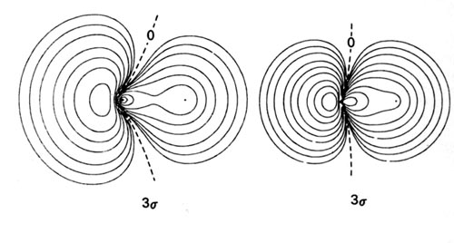
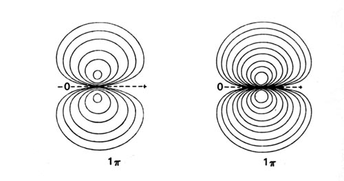

An Introduction to the Electronic Structure of Atoms and Molecules
Professor of Chemistry / McMaster University / Hamilton, Ontario
An Introduction to the Electronic Structure of Atoms and MoleculesProfessor of Chemistry / McMaster University / Hamilton, Ontario
|
The molecular orbitals which describe the motion of a single electron in a molecule containing two unequal nuclear charges will not exhibit the g and u symmetry properties of the homonuclear diatomic case. The molecular orbitals in the heteronuclear case will in general be concentrated more around one nucleus than the other. The orbitals may still be classified as s, p, d, etc. because the molecular axis is still an axis of symmetry.
In simple numerical calculations the molecular orbitals are sometimes approximated by the sum and difference of single atomic orbitals on each centre, their limiting form. The molecular orbital is said to be approximated mathematically by a linear combination of atomic orbitals and the technique is known as the LCAO-MO method. It must be understood that the LCAO-MO method using a limited number of atomic orbitals provides only an approximation to the true molecular orbital. The concept of a molecular orbital is completely independent of the additional concept of approximating it in terms of atomic orbitals, except for the case of the separated atoms. However, by using a large number of atomic orbitals centred on each nucleus in the construction of a single molecular orbital sufficient mathematical flexibility can be achieved to approximate the exact form of the molecular orbital very closely.
While the LCAO approximation using a limited number of atomic orbitals is in general a poor one for quantitative purposes, it does provide a useful guide for the prediction of the qualitative features of the molecular orbital. There are two simple conditions which must be met if atomic orbitals on different centres are to interact significantly and form a molecular orbital which is delocalized over the whole molecule. Both atomic orbitals must have approximately the same orbital energy and they must possess the same symmetry characteristics with respect to the internuclear axis. We shall consider the molecular orbitals in LiH, CH and HF to illustrate how molecular orbital theory describes the bonding in heteronuclear molecules, and to see how well the forms of the orbitals in these molecules can be rationalized in terms of the symmetry and energy criteria set out above.
The 1s and 2s atomic orbitals and the 2p orbital which is directed along the bond axis are all left unchanged by a rotation about the symmetry axis. They may therefore form molecular orbitals of s symmetry in the diatomic hydride molecules. The 2p orbitals which are perpendicular to the bond axis will be of p symmetry and may form molecular orbitals with this same symmetry. The energies and symmetry properties of the relevant atomic orbitals and the electronic configurations of the atoms and molecules are given in Table 8-2.
|
|
|
||||
|
|
|
|
|
||
|
|
|
|
|
|
|
|
|
|
|
|
|
|
|
|
|
|
|
||
| Atomic Configurations | Molecular Configurations | ||||
| Li | 1s22s1 | LiH | 1s22s2 | ||
| C | 1s22s22p2 | CH | 1s22s23s21p1 | ||
| F | 1s22s22p5 | HF | 1s22s23s21p4 | ||
Density diagrams of the molecular orbitals for the LiH, CH, and HF molecules are illustrated in Fig. 8-9.
| Fig. 8-9. Contour maps of the molecular orbital charge densities of the LiH, CH, HF diatomic hydrides. The nodes are indicated by dashed lines. Click here to see countour values. |

|
The 1s orbital energies of Li, C and F all lie well below that of the H 1s orbital. The charge densities of these inner shell orbitals are tightly bound to their respective nuclei. They should not, therefore, be much affected by the field of the proton or interact significantly with the H 1s orbital. The molecular orbital of lowest energy in these molecules, the ls molecular orbital, should be essentially nonbinding and resemble the doubly-occupied 1s atomic orbital on Li, C and F respectively. These predictions are borne out by the ls orbital density distributions (Fig. 8-9). They consist of nearly spherical contours centred on the Li, C and F nuclei, the radius of the outer contour being less than the bond length in each case. The forces exerted on the proton by the ls charge distributions are equivalent to placing two negative charges at the position of the heavy nucleus in each case. The charge density in the ls molecular orbital simply screens two of the nuclear charges on the heavy nucleus from the proton. This same screening effect is obtained for the 1s2 charge distribution when the molecules dissociate into atoms. Thus the 1s atomic orbitals of Li, C and F are not much affected by the formation of the molecule and the ls charge density is nonbinding as far as the proton is concerned. The ls atomic-like distributions are slightly polarized. In LiH the ls density is polarized away from the proton to a significant extent while in CH and HF it is slightly polarized towards the proton. Thus the 1s charge density exerts an antibinding force on the Li nucleus and a small binding force on the C and F nuclei.
The energies of the 2s atomic orbitals decrease (the electron is more tightly bound) from Li to F as expected on the basis of the increase in the effective nuclear charge from Li to F. The 2s orbital on Li is large and diffuse and will overlap extensively with the 1s orbital on H. However, the 2s electron on Li is considerably less tightly bound than is the 1s electron on H. Thus the charge density of the 2s molecular orbital in LiH will be localized in the region of the proton corresponding to the transfer of the 2s electron on Li to the region of lower potential energy offered by the 1s orbital on H. This is approximately correct as shown by the almost complete concentration of the charge density in the region of the proton in the 2s orbital density map for LiH. The small amount of density which does remain around the Li nucleus is polarized away from the proton. The 1s and 2s densities are polarized in a direction counter to the direction of charge transfer as required in ionic binding. The inwardly polarized accumulation of 2s charge density centred on the proton binds both nuclei.
The 1s molecular orbital in LiH is to a good approximation a polarized doubly-occupied 1s orbital on Li, and the 2s molecular orbital is, to a somewhat poorer approximation, a doubly-occupied and polarized 1s orbital on H. Our previous discussion of the bonding in LiH indicated that the binding is ionic, corresponding to the description Li+(1s2)H-(1s2). The molecular orbital description of an ionic bond is similar in that the molecular orbitals in the ionic extreme are localized in the regions of the individual nuclei, rather than being delocalized over both nuclei as they are for a covalent bond.
The matching of the 2s orbital energy with the H
1s orbital energy is closer in the case of C than it is for Li.
Correspondingly, the 2s charge density in CH
is delocalized over both nuclei rather than concentrated in the region
of just one nucleus as it is in the LiH molecule. There is a considerable
buildup of charge density in the binding region which is shared by both
nuclei. The 2s charge density exerts a large
binding force on both the H and C nuclei. This is the molecular orbital
description of an interaction
which is essentially covalent in character.
The 2s orbital energy of F is considerably lower than that of the H 1s orbital. The 2s orbital charge density in HF, therefore, approximately resembles a localized 2s orbital on F. It is strongly polarized and distorted by the proton, but the amount of charge transferred to the region between the nuclei is not as large as in CH. The 2s orbital in HF plays a less important role in binding the proton than it does in CH.
The 3s molecular orbital in CH and HF will result primarily from the overlap of the 2ps orbital on C and F, with the 1s orbital on H. The 2p-like character of the 3s molecular orbital in both CH and HF is evident in the density diagrams (Fig. 8-9). In CH the 1s orbital of H interacts strongly with both the 2s and 2ps orbitals on C. In terms of the forces exerted on the nuclei, the 2s charge density is strongly binding for both C and H, while the 3s charge density is only very weakly binding for H and is actually antibinding for the C. This antibinding effect is a result of the large accumulation of charge density in the region behind the C nucleus.
In HF, the H 1s orbital interacts only slightly with the 2s orbital on F, but it interacts very strongly with the 2ps orbital in the formation of the 3s molecular orbital. The 3s charge density exerts a large binding force on the proton. Thus the proton is bound primarily by the 2s charge density in CH and by the 3s charge density in HF. The 3s charge density in HF is primarily centred on the F nucleus and roughly resembles a 2ps orbital. Although no density contours are actually centred on the proton, the proton is embedded well within the orbital density distribution. This is a molecular orbital description of a highly polar bond.
The 3s orbital charge density exerts a force on the F and C nuclei in a direction away from the proton. The molecular orbitals which involve ps orbitals are characteristically strongly polarized in a direction away from the bond in the region of the nucleus on which the p orbital is centred. Compare, for example, the 3s orbitals of CH and HF with the 3sg molecular orbital of the homonuclear diatomic molecules.
When the C and H atoms are widely separated, we can consider the carbon atom to have one 2p electron in the 2ps orbital which lies along the bond axis, and the second 2p electron in one of the 2pp orbitals which are perpendicular to the bond. The F atom has five 2p electrons and of these one may be placed in the 2ps orbital; the remaining four 2p electrons will then completely occupy the 2pp orbitals. The singly-occupied 2ps orbitals on F and C eventually interact with the singly-occupied 1s orbital on H to form the doubly-occupied 3s molecular orbital in HF and CH. The remaining 2p electrons, those of p symmetry, will occupy the 1p molecular orbital. The H atom does not possess an orbital of p symmetry in its valence shell and the vacant 2pp orbital on H is too high in energy (-0.125 au) to interact significantly with the 2pp orbitals on C and F. Thus the 1p molecular orbital is atomic-like, centred on the F and C nuclei and is essentially nonbinding (Fig. 8-9). The 1p molecular orbital resembles a 2pp atomic orbital in each case, but one which is polarized in the direction of the proton.
The 1p orbitals of CH and HF illustrate an interesting and general result. In the formation of a bond between different atoms, the charge density in the s orbitals is transferred from the least to the most electronegative atom. However, the charge density of p symmetry, if any is present, is invariably transferred, or at least polarized, in the opposite direction, towards the least electronegative atom. Although the amount of charge density transferred is less in the formation of the p orbitals than in the s orbitals, one effect increases with the other. Thus the polarization is more pronounced in HF than in CH.
The three examples considered above demonstrate the essential
points of a molecular orbital description of the complete range of chemical
bonding. In the ionic extreme of LiH the charge density of the bonding
molecular orbital is localized around the proton. In CH the valence charge
density is more evenly shared by both nuclei and the bond is covalent.
The motions of the electrons in HF are governed largely by the potential
field of the F nucleus. This is evidenced by the appearance of the molecular
orbital charge distributions. The proton is, however, encompassed by the
valence charge density and the result is a polar bond.
 |
 |
 |
 |